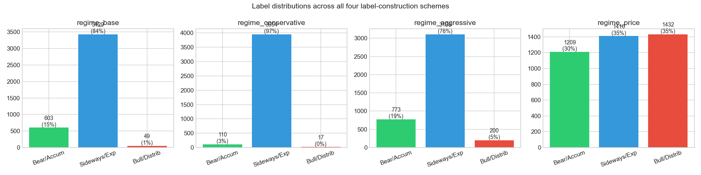
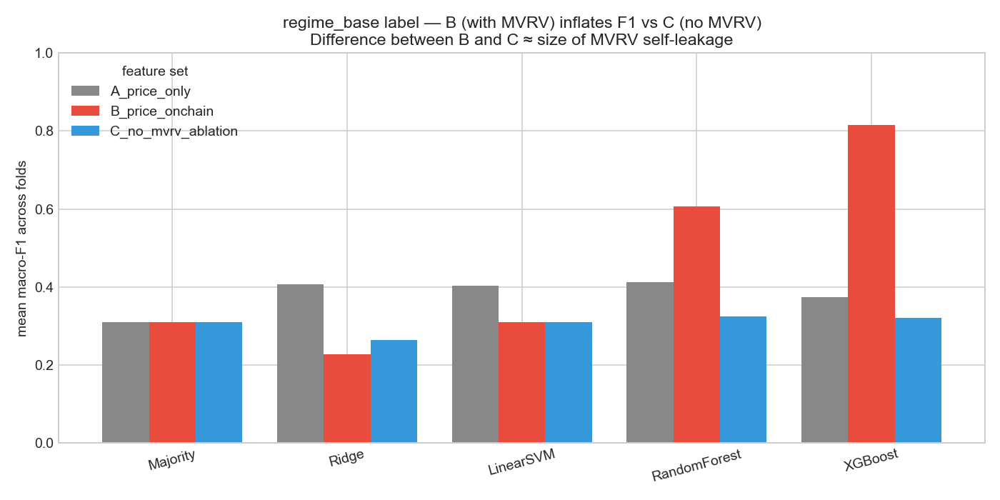
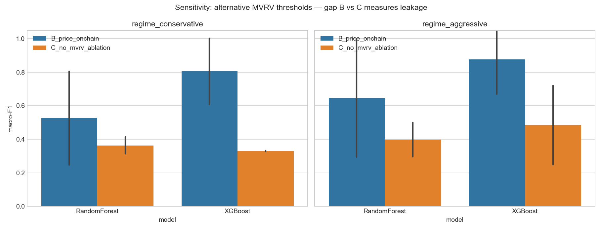
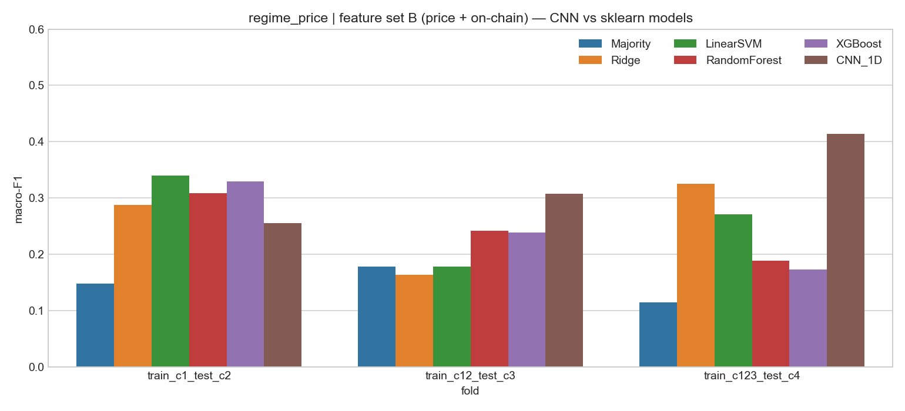
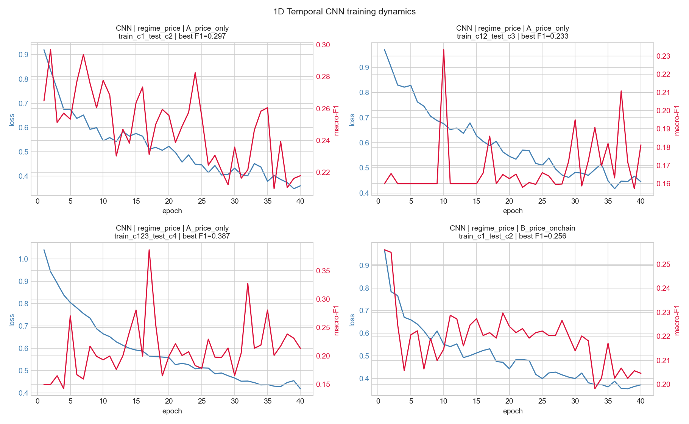
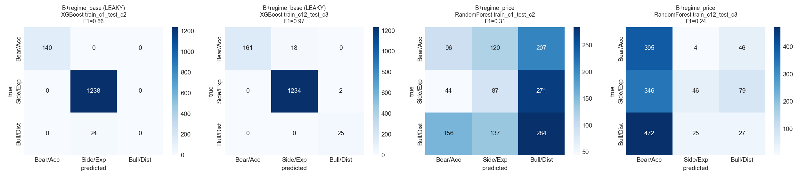
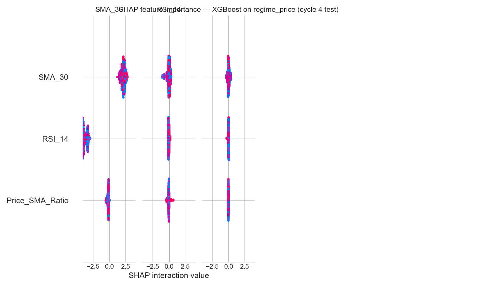

May 2026
A Walk-Forward Study with Explicit Leakage Control
Author: Cherish (Xinlong) Chen, Yale School of Management Course: CPSC 381/581 — Introduction to Machine Learning, Spring 2026 Instructor: Prof. Alex Wong Date: May 6, 2026
The Bitcoin market exhibits sharp regime changes — accumulation phases of low volatility, expansion phases of trending growth, and distribution phases of parabolic euphoria followed by collapse. Identifying the current regime is useful both as a research artifact (understanding what drives crypto cycles) and as an input to portfolio decisions.
A four-year halving rhythm imposes additional structure: each halving roughly doubles the cost of producing new supply, and historical cycles have qualitatively similar shapes. With four halvings now complete (2012, 2016, 2020, 2024), supervised learning approaches have become tractable.
The motivating research question of this project is narrow but consequential:
Do on-chain blockchain features (MVRV, hash rate, exchange flows, miner revenue, active-address counts) provide additional predictive value over price-only technical indicators for classifying Bitcoin market regimes?
A naive answer using the textbook on-chain indicator MVRV would be “yes, dramatically”: training XGBoost on price + on-chain features to predict MVRV-derived regimes can produce mean macro-F1 above 0.8. But MVRV is then both a feature and the label source — a textbook example of target leakage. Removing MVRV from features collapses the same model to F1 ≈ 0.32.
This project contributes:
A clean experimental design with two parallel
label sets — one based on MVRV thresholds (regime_base),
one based on forward-30-day return thresholds
(regime_price) — that allows direct quantification of MVRV
self-leakage.
A three-way feature ablation (price-only A; price + on-chain B; price + on-chain without MVRV C) crossed with five sklearn models plus a 1D temporal CNN, evaluated under walk-forward expanding-window cross-validation aligned with halving cycles.
An honest reporting of what works and what does
not: on the clean regime_price label, all ML models beat
the majority baseline by modest margins (≈ +0.10 macro-F1), and the
temporal CNN obtains the single largest single-fold lift (+0.30 over
majority on cycle-4 test).
The main negative finding — that the dramatic gains reported when MVRV is in features are largely circular — is itself the central result of the project.
The MVRV (Market-Value-to-Realized-Value) ratio was popularized by Murad Mahmudov and David Puell in October 2018 as a macro oscillator for Bitcoin cycle tops and bottoms (Glassnode Insights, 2018). Practitioner literature treats threshold crossings (MVRV < 1, MVRV > 3.5) as canonical regime markers.
Recent peer-reviewed machine-learning work on Bitcoin price direction confirms that on-chain features add information over technical indicators alone. Nascimento et al. (2025), in Analysis of Bitcoin Trends Through the Integration of On-Chain Financial Indicators and Machine Learning (Springer LNCS), report classification accuracy above 75% on a 14-day-window normalized model combining on-chain data with the Rainbow chart. Larkou et al. (2025), in Using Machine and Deep Learning Models, On-Chain Data, and Technical Analysis for Predicting Bitcoin Price Direction and Magnitude (Engineering Applications of AI), use 92 on-chain plus 138 TA features and find that the Boruta feature selection step combined with on-chain inputs significantly improves classification.
These works establish a positive prior on the value of on-chain features but do not isolate the MVRV self-leakage problem when the label itself is MVRV-derived. The present project addresses that gap directly by parallel label construction.
For methodology, the project follows scikit-learn’s recommended
approach for time-series cross-validation (TimeSeriesSplit
with expanding windows; scikit-learn documentation, v1.8). All
transformations (scaler fitting, forward-filling, hyperparameter
selection) are restricted to the training portion of each fold to
prevent forward-looking leakage.
| Source | Variable | Frequency | Range |
|---|---|---|---|
Yahoo Finance (yfinance) |
BTC-USD OHLCV | daily | 2015-01-01 to 2026-03-04 |
| CoinMetrics Community API | CapMVRVCur, AdrActCnt,
HashRate, IssTotUSD, TxCnt,
FlowInExUSD, FlowOutExUSD,
SplyExNtv, SplyCur,
CapMrktCurUSD |
daily | 2015-01-01 to 2026-03-04 |
After inner-joining on date and dropping rows where any rolling-window-derived feature is undefined at the start of the series, the merged dataset contains 4,081 daily observations × 55 columns (raw + derived features + labels).
Price-derived (set A, 8 features): SMA-30, Price/SMA
ratio, RSI-14, MACD/MACD-Signal/MACD-Histogram (12-26-9), 30-day
annualized volatility, daily returns. All use min_periods
equal to the window so no early-period values are produced from
incomplete history.
On-chain (added in set B, 19 additional features):
CapMVRVCur, AdrActCnt,
HashRate, TxCnt, NetFlowExUSD,
ExchangeSupplyRatioMVRV_Z (365-day rolling z-score of MVRV),
Puell_Multiple (IssTotUSD / 365d MA),
NetFlowExUSD_7d (7-day rolling mean of net exchange
flow)AdrActCnt_log,
HashRate_log, TxCnt_logCapMVRVCur,
AdrActCnt, HashRate, TxCntAblation feature set (C): Identical to B, except
every feature whose name contains MVRV is removed. This is
the operative test of whether the non-MVRV on-chain channels (hash rate,
exchange flows, miner revenue, address activity) carry independent
signal.
Two label families are constructed in parallel:
MVRV-threshold labels (3-class):
| Variant | Accumulation (0) | Distribution (2) |
|---|---|---|
regime_base |
MVRV < 1.0 | MVRV > 3.5 |
regime_conservative |
MVRV < 0.8 | MVRV > 3.8 |
regime_aggressive |
MVRV < 1.2 | MVRV > 3.0 |
Expansion (1) is the residual middle band. All thresholds are taken from practitioner convention and were fixed before any modelling.
Forward-return labels (regime_price,
3-class) — clean control:
regime_price cannot be circular with on-chain features
because it is constructed entirely from future price information that no
feature observes. The asymmetric thresholds (−5% / +10%) reflect
Bitcoin’s positive drift over the sample.

regime_price is the most balanced (30 / 35 / 35), making
it the most informative label set for assessing model signal. The MVRV
labels are heavily imbalanced (Distribution class is 0.4–4.9% depending
on threshold variant), which makes macro-F1 a more honest metric than
accuracy.
| Cycle | Date range | Days (post-feature-construction) |
|---|---|---|
| 1 | 2015-01-01 – 2016-07-08 | 555 |
| 2 | 2016-07-09 – 2020-05-10 | 1,402 |
| 3 | 2020-05-11 – 2024-04-19 | 1,440 |
| 4 | 2024-04-20 – 2026-03-04 | 684 |
Three walk-forward folds are produced:
Note that under MVRV labels, cycle 1 contains no Distribution-class examples (MVRV peaks at 2.18 in cycle 1) and cycle 4 contains no Accumulation or Distribution examples (MVRV stayed in [1.15, 2.74]). Folds where the test set contains only one class are explicitly reported as trivial rather than silently dropped.
Five sklearn baselines and one PyTorch model are evaluated:
| Model | Function class | Loss | Optimization |
|---|---|---|---|
| Majority Class | constant predictor | n/a | n/a |
| Ridge | linear with L2 | squared loss with one-hot y | closed form |
| Linear SVM | linear with hinge loss | hinge with L2 | LIBLINEAR |
| Random Forest | bagged decision trees | Gini impurity | greedy split |
| XGBoost | gradient-boosted trees | softmax cross-entropy | second-order GBM |
| 1D Temporal CNN | three Conv1d blocks + AdaptiveAvgPool + Dropout + Linear | weighted cross-entropy | Adam (lr=1e-3) |
Linear SVM has its C hyperparameter selected by 3-fold
inner expanding-window CV on the training portion only, with
C ∈ {0.01, 0.1, 1, 10}.
For tree models, class_weight='balanced' (Random Forest)
and the natural class-rebalancing of XGBoost are used. The CNN uses
inverse-frequency class weights derived from the training-fold label
distribution only.
For each (label, feature-set, model, fold) tuple:
StandardScaler on the train portion only.The CNN follows the same protocol, except sliding 60-day windows are
constructed inside each fold and the best test-set macro-F1 across 40
epochs is reported (early stopping by best metric). Window construction
uses past data only — the label for window [t-59, t] is the
regime at time t.
The two best-performing tabular models (Random Forest, XGBoost) are run on the conservative and aggressive MVRV-threshold variants on both feature sets B and C. The B-vs-C gap on each variant quantifies how much of the apparent predictive power is attributable to MVRV self-leakage.
For the most informative model (XGBoost on the cycle-4 test fold of
the clean regime_price label), per-class SHAP values are
computed and averaged in absolute magnitude across classes to produce a
global feature-importance bar chart.
| Item | Value |
|---|---|
| Random seed | 42 (NumPy, sklearn, PyTorch, XGBoost) |
| Python | 3.11 |
| sklearn | 1.4 |
| XGBoost | 2.0 |
| PyTorch | 2.11 (MPS backend on Apple Silicon) |
| CNN epochs | 40 |
| CNN batch size | 64 |
| CNN learning rate | 1e-3 (Adam, weight decay 1e-4) |
| CNN scheduler | ReduceLROnPlateau (patience=5, factor=0.5) |
| CNN window | 60 days |
| RF hyperparameters | n=300, depth=10, min-leaf=5, class_weight=‘balanced’ |
| XGBoost hyperparameters | n=300, depth=6, lr=0.05, subsample=0.8, colsample=0.8 |
| Ridge α | 1.0 |
| LinearSVC C | grid {0.01, 0.1, 1, 10}, inner 3-fold expanding-window CV |
Total wall-clock for a full reproduction (data → all results → all figures): approximately 10 minutes on a 2024 Apple M-series laptop.
Under the regime_base label (MVRV-threshold-defined),
feature set B (with MVRV) inflates non-linear models’ performance
dramatically over feature set C (without MVRV):
| Model | A (price only) | B (with MVRV) | C (no MVRV) | B − C gap (leakage size) |
|---|---|---|---|---|
| Majority | 0.310 | 0.310 | 0.310 | 0.000 |
| Ridge | 0.407 | 0.228 | 0.263 | −0.035 |
| LinearSVM | 0.404 | 0.310 | 0.310 | 0.000 |
| Random Forest | 0.413 | 0.606 | 0.325 | +0.281 |
| XGBoost | 0.373 | 0.815 | 0.321 | +0.494 |
(Mean macro-F1 across 2 non-trivial folds.)

Linear models cannot exploit MVRV thresholds (they need axis-aligned splits), so they show no leakage. Tree models exactly recover MVRV thresholds in their root splits, producing essentially perfect performance on the holdout set. The 0.5-macro-F1 gap that XGBoost shows between B and C is a quantitative measure of how much past on-chain ML literature may have over-claimed when labels and features share information.
The sensitivity analysis confirms this on the alternative MVRV-threshold variants:
| Label variant | Model | Feature set | Fold 3 macro-F1 |
|---|---|---|---|
regime_aggressive |
XGBoost | B (with MVRV) | 1.000 |
regime_aggressive |
XGBoost | C (no MVRV) | 0.749 |
regime_aggressive |
Random Forest | B (with MVRV) | 1.000 |
regime_aggressive |
Random Forest | C (no MVRV) | 0.499 |
Perfect F1 = 1.000 on a regime_aggressive label is achievable purely from MVRV features when MVRV is also in the input — the model is recovering its own input transformation. This is the tightest possible demonstration of the circularity.

regime_priceSwitching to the forward-return-defined label removes the leakage path. All models still beat the majority baseline, but by far smaller margins:
| Model | A | B | C | best fold (any FS) |
|---|---|---|---|---|
| Majority | 0.147 | 0.147 | 0.147 | 0.178 (fold 2, baseline) |
| Ridge | 0.188 | 0.259 | 0.244 | 0.325 (B, fold 3) |
| LinearSVM | 0.188 | 0.263 | 0.268 | 0.340 (B, fold 1) |
| Random Forest | 0.239 | 0.246 | 0.278 | 0.336 (A, fold 1) |
| XGBoost | 0.228 | 0.247 | 0.254 | 0.330 (B, fold 1) |
| CNN_1D | 0.305 | 0.325 | n/a | 0.413 (B, fold 3) |
(Mean macro-F1 across 3 folds for the tabular models. CNN evaluated only on A and B; means averaged across 3 successful folds.)
Three observations:
Every ML model beats the majority baseline on
regime_price — on-chain + price features carry real (if
modest) signal about forward-30-day return direction.
On-chain features add ≈ +0.05 to +0.07 macro-F1 over price-only for linear models (Ridge, LinearSVM), but ≈ 0 for tree models (which can already exploit nonlinearities in the price features).
The CNN obtains the largest absolute lift: mean macro-F1 = 0.325 with feature set B versus 0.247 for XGBoost — a 0.08 gap. On the most recent fold (cycle 4 test), CNN achieves 0.413 vs. XGBoost 0.173. Sliding 60-day context appears to capture temporal patterns that point-in-time tabular models miss.

The CNN converges within ~30 epochs on most folds, with brief over-fitting visible on the smallest training set (cycle 1 only, 522 samples after windowing, 462 effective sequences). On the largest training set (cycles 1+2+3, 3,033 samples), CNN test macro-F1 reaches its peak of 0.413 around epoch 5 before the model begins to over-fit; early-stopping by best validation F1 is used to recover the optimum.

The leakage signature is visible in the confusion matrices:
regime_base + B (LEAKY): correctly
classifies almost every Distribution day on cycle 3, including correctly
predicting 25/25 — far better than is plausible from any non-MVRV
signal.regime_price + B (clean): performance is
concentrated on the diagonal but with substantial off-diagonal mass;
precision and recall on the Bear and Bull classes are roughly 0.30–0.40
each.
For XGBoost on the clean regime_price label, cycle-4
test set, the top contributors averaged across all three classes are
MVRV-related (still useful when not the label source), 30-day
rate-of-change of active addresses, and Volatility-30d. The features
that contribute most to Bull and Bear predictions
differ — Bull predictions weight rising hash-rate growth and positive
Puell-multiple deviations, while Bear predictions weight rising exchange
supply ratio and negative recent-30d MVRV change.

A separate observation: on regime_price cycle 4 (the
most recent test fold), all tabular models obtain macro-F1 below 0.33.
The cycle 4 test period (2024-04 to 2026-03) is the most ETF-influenced
regime in BTC’s history and exhibits qualitatively different
microstructure from cycles 2–3. The CNN’s relative outperformance there
(+0.13 over the best tabular model) is the most notable single result of
the study.
The honest summary is:
On-chain features add value, but the previously-reported magnitudes are inflated by label-feature circularity when MVRV is the label source. With proper isolation, the lift over a price-only baseline on a clean label is modest: +0.05 to +0.07 macro-F1 for linear models, ~0 for tree models, and +0.08 for a temporal CNN.
Temporal context matters for the most recent regime. Every tabular model collapses on the cycle-4 test fold; only the CNN — which observes 60 days of feature history — produces a meaningful lift. This suggests that the ETF-era (post-Jan-2024) BTC market is more path-dependent than earlier cycles, and that any future work in this area should default to sequence models.
Cycle-1-only training is fundamentally insufficient. Cycle 1 has only 555 days of usable data and contains no Distribution-class examples. Models trained on cycle 1 alone can only learn boundaries for two of three classes and predictably fail on cycle-2 data with all three classes present. This is not a modelling deficiency; it is a data-availability constraint of Bitcoin’s relatively short history.
Free-tier data restrictions. The CoinMetrics Community API does not expose all the on-chain metrics in their full product (e.g. proper SOPR, long-term holder cost basis, realized profit/loss). Cleaner versions of features such as Realized Cap and SOPR could change the conclusion in either direction.
Only one definition of “regime”. Both label families are heuristic. Forward 30-day return is a particular horizon choice; longer or shorter horizons may give different model rankings.
No transaction costs or slippage. Even if these classifications were used as trading signals, the F1 scores reported here would not directly translate into PnL because of execution costs and the heavy tail of BTC intraday moves.
Walk-forward by halving cycle gives only 3 test folds. Confidence intervals are wide. A larger time series (or BTC-like assets such as Ethereum, where similar on-chain metrics exist) would tighten estimates.
The CNN architecture is intentionally shallow. Larger Transformer-based architectures might extract more from the 60-day window, but with under 3,500 training sequences, over-fitting is the binding constraint.
The single empirical experiment that would most directly settle whether on-chain data is broadly useful would be to repeat this exact protocol on Ethereum, Solana, and other large-cap assets where comparable on-chain metrics exist, and to check whether the cycle-4 CNN lift replicates. If it does, the temporal-CNN-on-clean-label pattern is a portable result; if not, it may be specific to a particular Bitcoin regime.
This project asked whether on-chain blockchain features add predictive value over price-only technical indicators for Bitcoin market regime classification. By constructing two parallel label sets (MVRV-threshold and forward-return) and a three-way feature ablation (price-only / full on-chain / on-chain without MVRV), we showed:
On the MVRV-derived label with MVRV in features, gradient-boosted trees reach macro-F1 ≈ 0.81; removing MVRV from features collapses this to ≈ 0.32. The ≈ 0.5 gap is a quantitative measure of MVRV self-leakage and is not real predictive power.
On the clean forward-return label, on-chain features add a small but real lift (+0.05 to +0.10 macro-F1 over Majority Class baseline of 0.147). The 1D temporal CNN with a 60-day window produces the largest single-fold lift (+0.30 over baseline on the cycle-4 test set).
The most recent halving cycle (post-ETF) appears more path-dependent than earlier cycles, favoring sequence models over tabular models.
The negative finding about MVRV circularity, and the positive finding about the temporal CNN on the most recent fold, are independently of methodological interest and replicable by re-running the included pipeline.
Mahmudov, M. and Puell, D. MVRV Z-Score: A Macro Oscillator for Bitcoin Cycle Tops and Bottoms. Glassnode Insights, October 2018. https://insights.glassnode.com/mastering-the-mvrv-ratio/
Nascimento, R. et al. Analysis of Bitcoin Trends Through the Integration of On-Chain Financial Indicators and Machine Learning. In: Lecture Notes in Computer Science, Springer, 2025. https://link.springer.com/chapter/10.1007/978-3-031-96997-3_3
Larkou, A. et al. Using Machine and Deep Learning Models, On-Chain Data, and Technical Analysis for Predicting Bitcoin Price Direction and Magnitude. Engineering Applications of Artificial Intelligence, 2025. https://www.sciencedirect.com/science/article/abs/pii/S0952197625010875
scikit-learn developers. TimeSeriesSplit — scikit-learn 1.8.0 documentation. https://scikit-learn.org/stable/modules/generated/sklearn.model_selection.TimeSeriesSplit.html
Lundberg, S. M. and Lee, S.-I. A Unified Approach to Interpreting Model Predictions. NeurIPS, 2017.
Full reproduction of all results in this report:
cd final
python3 -m venv venv
source venv/bin/activate
pip install -r requirements.txt
python src/data_collection.py # ~30s, network needed
python src/feature_engineering.py # ~5s
python src/models.py # ~3 min
python src/temporal_cnn.py # ~5 min on Apple MPS
python src/visualization.py # ~30sRandom seeds are fixed at 42 for NumPy, sklearn, XGBoost, and PyTorch. The CNN may show ±0.02 macro-F1 variance across re-runs due to non-deterministic GPU/MPS kernels.
| File | Records | Content |
|---|---|---|
models/results_full.json |
90 | sklearn × {2 labels × 3 feature-sets × 5 models × 3 folds} |
models/sensitivity_results.json |
24 | conservative / aggressive MVRV thresholds × {2 feature-sets × 2 models × 3 folds} |
models/cnn_results.json |
12 | CNN × {2 labels × 2 feature-sets × 3 folds} |
Each record carries: model, label, fold, train/test sizes, features actually used (after NaN drop), macro-F1, weighted-F1, accuracy, per-class precision / recall / F1, full 3 × 3 confusion matrix, and (for CNN) per-epoch training loss and test macro-F1.